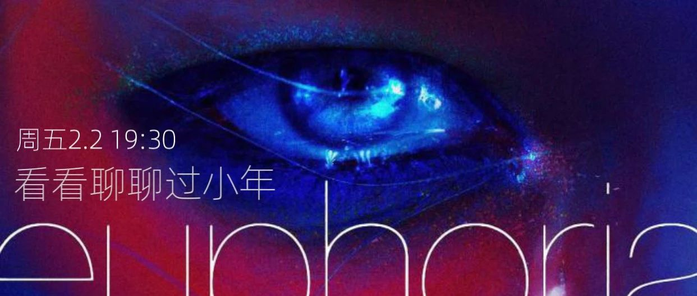

成都周五放映｜《亢奋特别篇》
这两集的视觉和剧情结构都很简单，就是两段对话。
一段是Rue重新开始使用物质（relapse）之后和为她提供帮助的Ali在餐厅里的对话；
一段是Jules在逃家以后被送去和心理医生的对话。
关于犯错与失败，关于挣扎，关于斗争和la revolución，关于跨儿体验的描述，关于大海和女性气质。作为一个神经多元酷儿/跨儿，我真是超级喜欢这两集。
（⚠️观看前需要创伤预警：自杀倾向，物质成瘾，家庭暴力）
这期放映没有定主题，只是很想和大家一起看一次，听听大家的感受。
（有人一起哭我也好意思哭一些👉🏼👈🏼）
周五刚好是北方小年所以还准备了春联，想写的可以一起写点🫶🏼
地址在南门二环内，报名后短信通知
10元/人，防鸽，也是帮助空间继续运营下去。